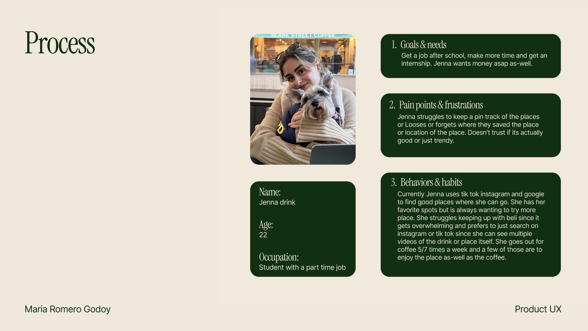
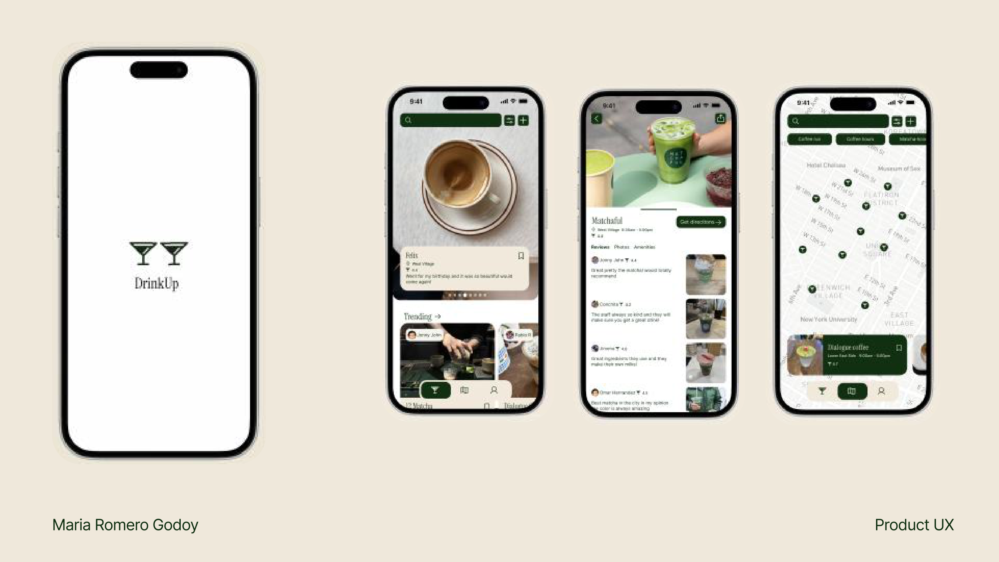

DrinkUp
Discover your next favorite drink spot or save the places you love and see where everyone else is going
Finding a good drink shouldn't be complicated.
DrinkUp is designed for people who love trying new coffee, matcha, cocktails and other drinks, but struggle to discover new spots or remember the ones they want to visit.
Instead of being another general review app, DrinkUp focuses specifically on drinks, making it easier to decide where to go based on what you're in the mood for.
We save so many places. Then we lose them.
One of the frustrations I explored was how people find spots through social media, save them in different places, and then forget where those recommendations went. It's also hard to know whether a spot is actually good or just trending.
In my project persona, Jenna is a 22-year-old student with a part-time job who regularly goes out for coffee, searches Instagram and TikTok for recommendations, and struggles to organize all the spots she wants to try.

A more social way to discover drinks.
I designed DrinkUp around a few simple actions: browse posts and recommendations, explore drink spots on a map, and look through other people's saved collections.
Making discovery feel visual and personal was important. A photo can catch your attention but seeing the location and what someone thought about the experience helps you decide if it's somewhere you'd want to go.
From curiosity to a saved spot.
The experience connects visual recommendations with location-based exploration, so finding somewhere new and keeping track of it can happen in one place.
Opening DrinkUp
A first look at the app
Finding a spot
Exploring drink recommendations through the interface
The social
Sharing saved places and recommendations
Recommendations you can come back to.
DrinkUp also lets people discover spots through other people's saved collections. Rather than losing a place in a list of screenshots or social posts, users can explore collections built around different occasions and interests.
